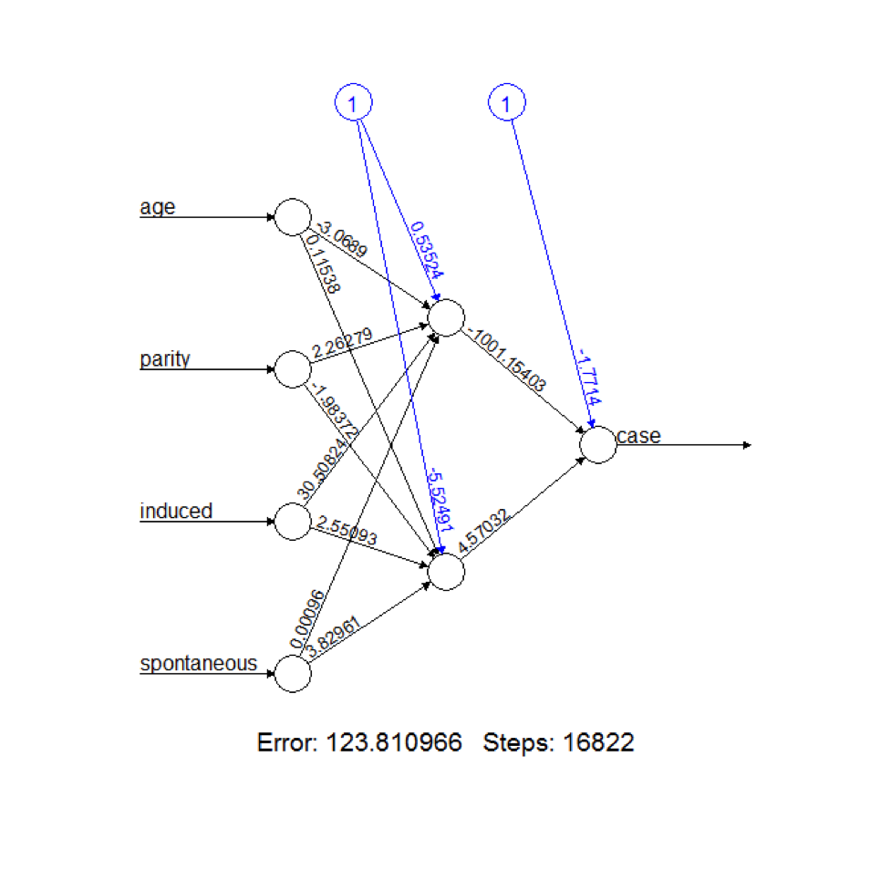
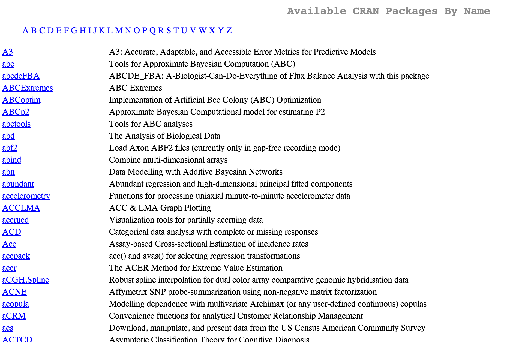
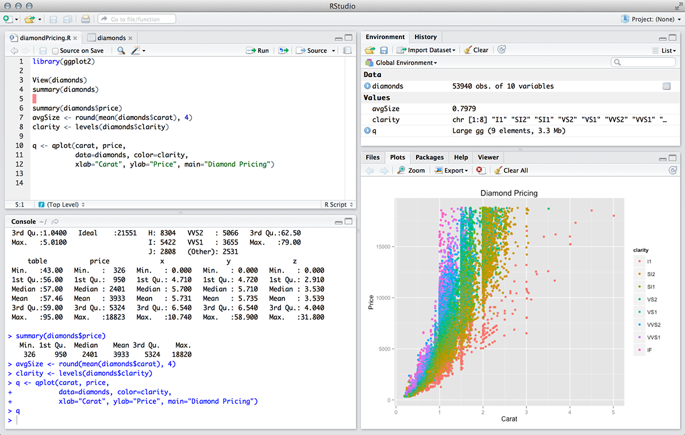

6 reasons R isn't going anywhere Tweet
by
Recently there's been a flurry of blog posts and articles describing how Python
is taking over R and that Python and/or Julia are going to blow it out of the
water. But if you think that you're escaping from the death grip of R? I've
got news for your Mr. Scientist, R is here to stay (at least for a while).
I came across Matt Asay's article a few weeks ago on HackerNews. It's a great article, and I think the two strongest arguments it makes are:
- R is a pain in tough to learn
- Python is general purpose, wheras R is a specialist's language
And while I think these things might be true, I don't think R is going to be displaced by Python in the near future.
R is still cutting edge
So I'm not really sure how this one goes unnoticed, but despite the complaining about the syntax, R is still a cutting edge tool with millions of users.

Time
R isn't new. It's been around for about 20-30 years. It's not just going to go away overnight.
- There are thousands of packages on CRAN. You can find niche, hyper-specific packages that fit your particular need.
- Large organizations using R aren't going to make "the switch" overnight. Many
companies are just now escaping the death grip that
SAS(the programming langauge, not SaaS). These are the entities that constitutue a large portion of the user base, despite not having a very large voice. If and when these types of organizations move away from R, it's going to take time happen (on the order of multiple years).
 Don't believe me? Check out the package listing
RStudio > IPython Notebook
The IPython Notebook is great for presentations and tutorials, but when it comes to an actual analytical IDE, it's hard to beat RStudio . It looks great, is fast, and is the best web based app I have used. It actually feels the same as using it on your local computer.

How many people are actaully switching?
If you read Hacker News or /r/programming, you're most likely being over-exposed to tech that is "cool" but not neccessarily mainstream.
Just think about how many B and C level R programmers are out there. They're not the sort of people who are considering moving to Python because there's a better version of RandomForest.
Because Hadley Wickham will be
R's fearless leader. Mr. Wickham has built plyr, stringr, and most
notably, ggplot2. It's a laundry list of functionality that should exist in
base R, but doesn't.
I'm also excited about Advanced R Programming. I
think it will help make package development in R more accessible to the
typical R user. Previously, the best documentation for building R packages
was found here. Functional?
Yes. Thurough? You bet. Helpful? Maybe. Easy to follow? Absolutely not.
I have no doubt that the R community continue to benefit for Mr. Wickham's generosity in the years to come.
Photo of Mr Wickham, courtesy gravatar
Pydata is confused
Pydata is the non-profit wing of Continuum Analytics. It essentially gives them a seperate avenue for raising money via donations and grants by which they can pay developers to work on open source/government projects. In concept, I think it's great! We get more open source tools! But to date I've been a little disappointed in the tools that have come out of the program:
Bokehtakes dependency hell to a different level. As I'm reading the dependencies list, it seems like 10 engineers were put in a room and just starting listing technologies and concepts that they thought were cool. In addition it's supposed to be an implementation of the grammar of graphics as well, though it really just looks likematplotlib.NumbaSeriously, who uses this?Blazesounds sweet (next gennumpy) but I don't think it's going to be relevant for a long time.numpyonly got popular once we were givenpandas. The fact of the matter is people like their data in rectangles--Excel, data frames in R andpandas. So in order forBlazeto be of use to the average data scientist,Blazeis going to need a pandas-esque counterpart.
Final Thoughts
- R is easy to install
- You can do a lot in base R
- Most analysts don't want a gernal purpose language (or at least don't know they should want one)
I've got news for you, Mr. Scientist